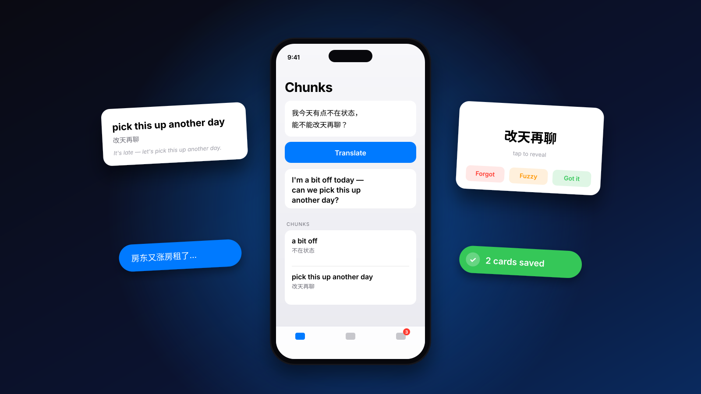

An English-learning app that starts from the sentence you just couldn't say.

After two years in Sydney my English was fine on paper. In conversation I kept hitting the same wall: I knew exactly what I wanted to say in Chinese, and the natural English for it just wasn't there. I tried the obvious tools. Each one solved the wrong half of the problem.
“Today's word: ubiquitous.”
× Someone else's list, in no context I'd ever meet. I learned words I never used and still lacked the ones I needed yesterday.
“Here's your sentence. Copy it.”
× Perfect answer, zero retention. I'd paste it, send it, and need the same phrase again a week later.
“Create a new card: front, back, tags…”
× The memory science works. The card-making doesn't — it's a chore, so the deck stays empty.
The moment you fail to say something is the single best moment to learn it — you have the context, the motivation, and the exact sentence. Every existing tool threw that moment away. Chunks is built to catch it: ask once, and the phrases worth keeping become cards on their own.
This is a working replica of the app — same layout, same copy, same scheduling code as the version on my phone. The AI replies are pre-baked so it runs without an API key; everything else is real.
Tap one of the sample sentences and hit Translate. You get the natural English — not a literal translation — and the reusable phrases inside it are saved as cards before you've done anything. The green bar is the only confirmation.
Every card came from something you actually tried to say. New cards are tinted; the grey line under each shows when it's due. Search replaces categories — more on that below.
Chinese on the front, because the goal is producing English, not recognising it. Tap to flip. The three buttons show the next review date before you press — the consequence is visible, so the grading is honest. This runs the app's actual scheduling code.
DEMO · SYNTHETIC DECK · AI REPLIES PRE-BAKED · SCHEDULER IS THE REAL ONE
The design brief I gave myself: the app must cost less effort than not using it. Every detail below exists to remove a step, a decision, or a doubt.
No language picker, no mode switch, no settings on the main screen. The app knows you're typing Chinese and wants English back.
Because the moment I'm trying to catch lasts about five seconds. Any choice on the way in and I'd just paste it into a translator instead.
There is no save button anywhere. Cards are written the instant the phrases come back; the green bar just tells you how many.
Because 'decide whether to keep this' is exactly the chore that kills flashcard apps. Keeping everything and pruning later is cheaper than judging up front.
A card is a phrase-sized piece of language with its meaning and one fresh example — never the whole sentence you typed, never a single word.
Because whole sentences don't transfer to new situations and single words don't carry the grammar. Phrases are the unit fluent speakers actually reuse.
Forgot / fuzzy / got it. Under each button, the date this card comes back if you press it — computed live from the card's history.
Because a four- or five-point scale invites deliberation, and a hidden interval invites gaming. Seeing '21d' under Got it makes you honest.
Review always goes Chinese → English. You never see the English first.
Because the problem was production, not comprehension. I could already recognise 'pick this up another day' — I needed to be able to reach for it.
The only nudge in the product is a red count on the Review tab. No push, no streaks, no daily goal.
Because I'm the user and I know what streak mechanics do to me: guilt, then uninstall. The badge is there when I open the app for something else.
The library has a search box and nothing else. There are no folders, tags, or scenes to maintain.
Because I shipped auto-tagging, watched it be wrong, and noticed I only ever searched anyway. The story is in the iterations below.
If a sentence is too basic to yield phrases, the whole sentence becomes one card, and the app says so.
Because 'nothing happened' is the worst possible response to someone who just made the effort to ask.
Cards live on the device. Sync happens a second and a half after you stop doing things, and silently gives up if there's no network.
Because review happens on the train and the tram, and a spinner is a reason to close the app.
I'm the only user, which is a weakness and a superpower: every decision got tested against real frustration within a day. These are the ones that flipped.
The first version created a card for the full sentence plus one per phrase. Within a week the review queue felt padded — I was seeing the same idea twice in a row.
Cut the sentence card. Phrases only; the sentence is kept as the card's example instead.
Each card got an AI-assigned scene — 点餐, 职场吐槽 — and a fifth tab to browse by scene. I tuned the prompt hard: two to four characters, verbs not descriptions, a banned list of vague words.
In use, the labels bent toward the sentence's mood: a neutral phrase from an anxious sentence got tagged 担忧. And I never browsed by scene — when I wanted a card, I searched.
Removed the tab, the field, and half the prompt in the iOS rewrite. Wrote a 'do not rebuild this' rule into the project notes.
Standard SM-2 has a 0–5 grade and a formula nobody can predict in their head. I kept three grades and intervals I could explain in one sentence: forgot resets to a day; got it doubles-ish, then multiplies.
Kept. Predictability mattered more than optimality for a deck this size.
After months of daily use the shape was settled: four tabs, gestures for grading, offline-first. That's when it earned a SwiftUI rewrite — real swipes, real local storage, and a proper scheduler (FSRS) that migrates the old cards' history instead of resetting it.
In progress. Translate, library and sync are done; review and App Store submission are next.
Two clients, one thin backend. The PWA is three files of vanilla JS with no build step; the iOS app is SwiftUI + SwiftData. Both talk to a single Cloudflare Worker that proxies the AI, keeps the keys server-side, and syncs cards to D1 with last-write-wins. Tap a node for the reasoning.
Click on any block in the diagram to see what it does and why I picked it.